Portfolio
Robotics, design, and humanoid systems.
Hi, I am Anshul Raj. I am a final-year Mechatronics Engineering student who enjoys building robots, working on design, and learning by making real systems.
I enjoy building systems that connect design, hardware, and motion.
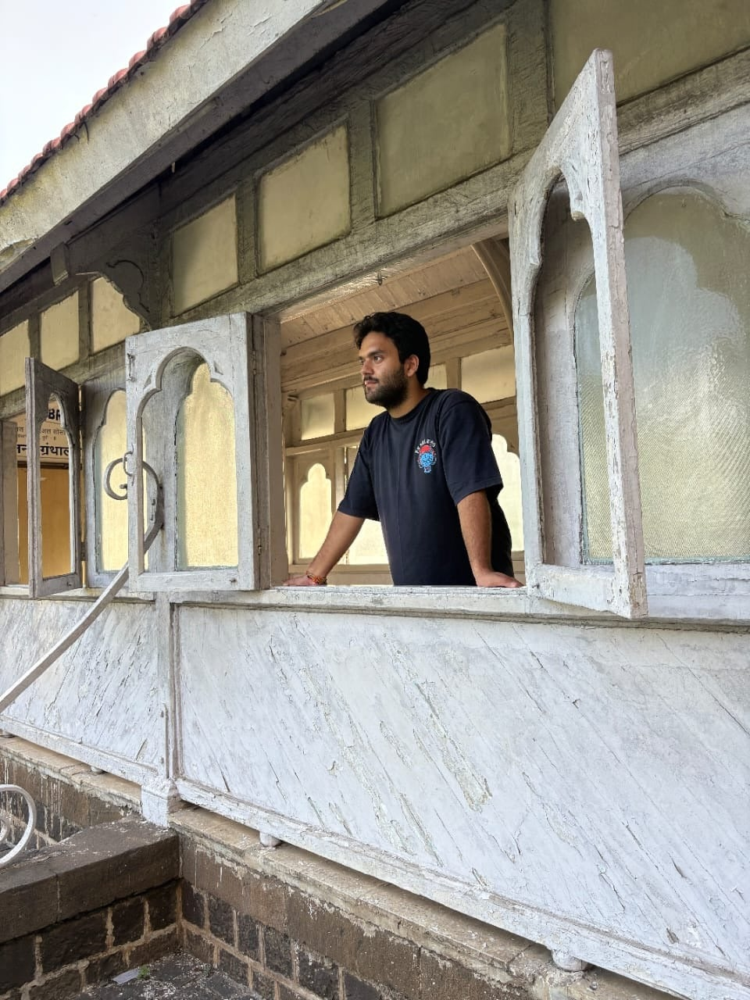
Main focus
Simple, practical, and hands-on engineering.
- Robotics projects with real build work
- Humanoid robot development
- Design using Fusion 360 and SolidWorks
- Control and electronics with Arduino and Raspberry Pi
About
A curious builder with a strong interest in robotics.
I am Anshul Raj, a final-year Mechatronics Engineering student with a deep interest in robotics, automation, and mechanical systems. I like exploring new ideas, learning new tools, and improving my skills through projects, internships, and teamwork.
My work includes robotic arms, assistive robotic designs, simulations, grippers, and humanoid systems. I enjoy both the design side and the hands-on building side of engineering.
Featured work
Humanoid robot
One of my main projects is a 19-degree-of-freedom humanoid robot. I worked on design, system setup, sensing, and motion.
The robot uses Raspberry Pi, high-torque serial bus servos, ROS 2, IMU feedback, and vision modules. I worked on the mechanical side as well as the software side so the robot could move in a better and more controlled way.
This work is still in progress, and it is one of the most important parts of my portfolio.
19 DOF
ROS 2
Raspberry Pi
Servo Control
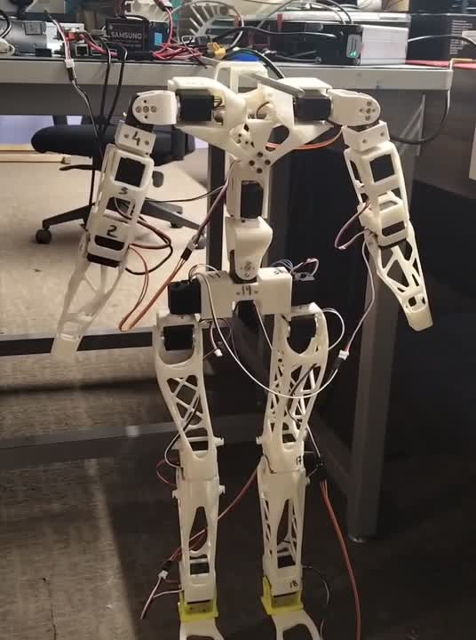
Movement frames
Walking and motion test snapshots
These frames help show that the humanoid work is active and physical, not just a concept.
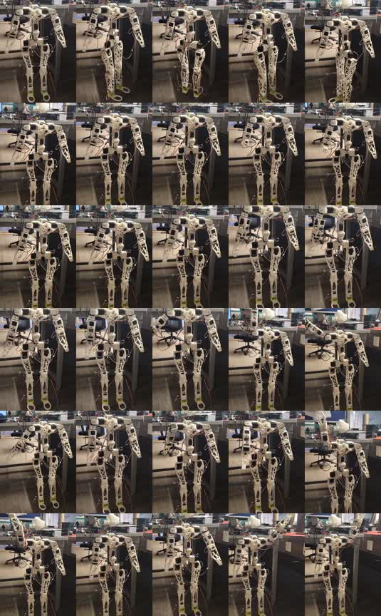
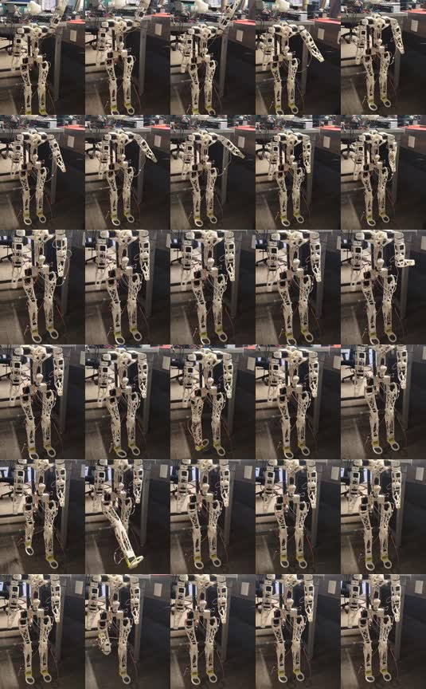
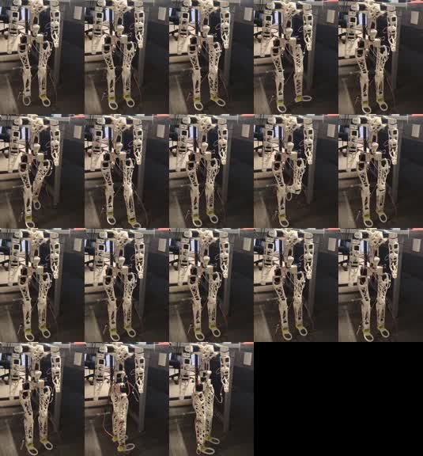
ROS 2 side
ROS 2 control and integration
In the humanoid work, ROS 2 is important for handling control flow, sensor updates, and robot coordination. It connects movement commands, feedback, and hardware behavior in one system.
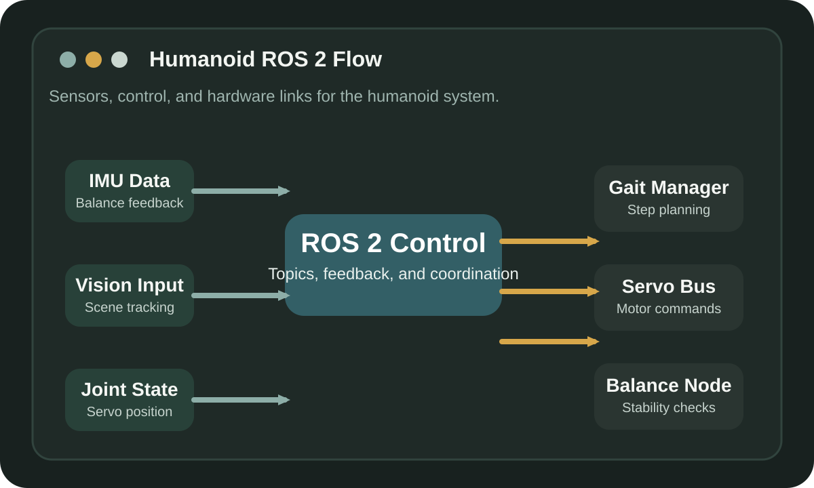
RL side
Walking and balance ideas with RL
I also connect the humanoid work with RL-based ideas for better balance, smoother walking, and improved joint coordination. This relates the learning side of control with the real robot build.
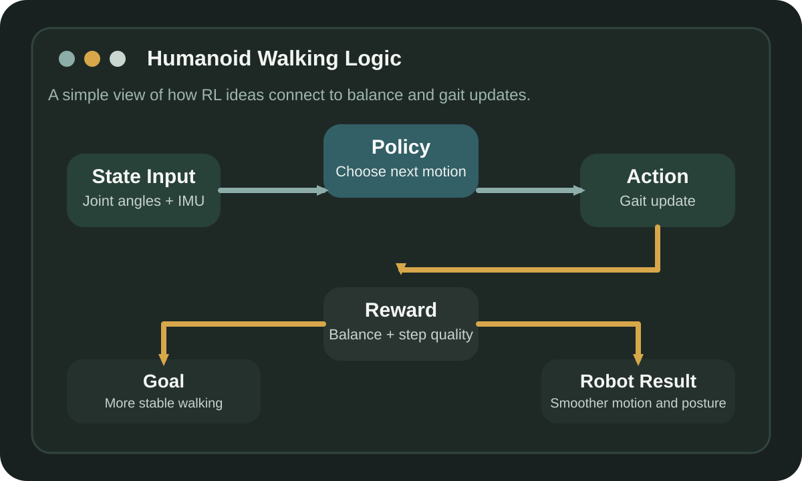
Projects
Selected work
Robotics
Robotic Arm
A robotic arm built to copy basic human arm movement. It uses links, joints, motors, sensors, and controller logic for object movement.
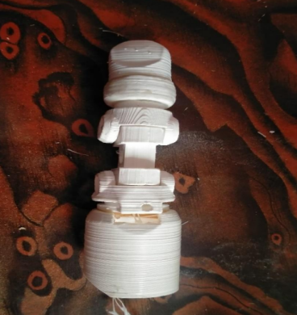
Assistive robotics
Exoskeleton Robotic Finger
A wearable robotic finger idea made to support finger movement using sensors, motors, and link mechanisms.
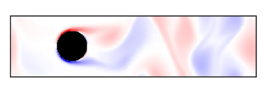
Python simulation
Stefan-Boltzmann Simulation
A Python-based simulation used to study how radiation changes with temperature. It helped me practice coding, plotting, and basic scientific analysis.
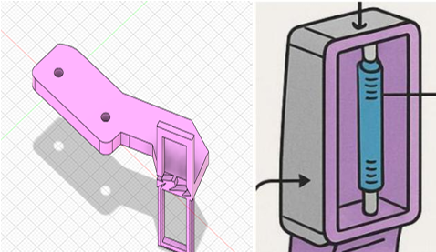
Design and mechanism
Hybrid Robotic Gripper
A gripper concept that combines a rigid frame with softer gripping ideas so it can stay accurate and still handle different shapes more safely.
This project is also connected to my patent work.
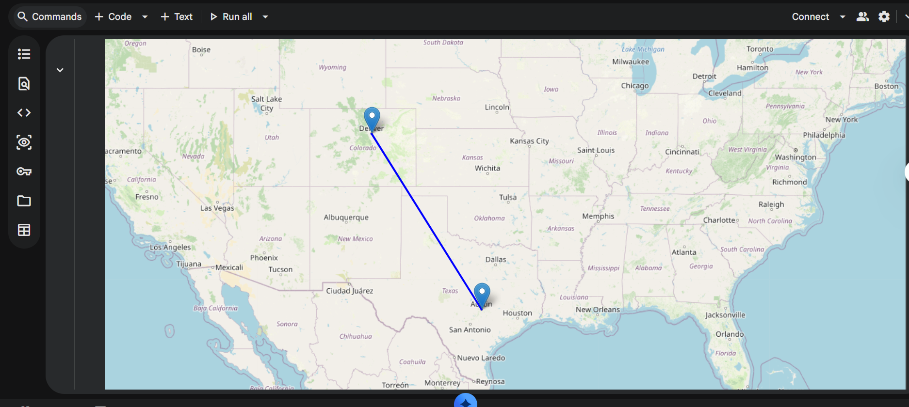
Mapping and data work
GIS and Python Projects
I also worked on GIS and map-making tasks using Python. This included basic spatial analysis, map visualization, and handling geospatial datasets.
Patent
Hybrid Robotic Gripper Patent
I have one patent related to the Hybrid Robotic Gripper project. It shows my interest in design, mechanism work, and practical innovation.
Skills
Tools I use
Fusion 360
SolidWorks
Python
C++
C
Arduino
Raspberry Pi 5
PLC
Sensors
Actuators
Control Systems
Mechanical Design
Internships
Experience and training
NIELIT, Jhajku
Intern
Worked with Python and built practical experience through technical training.
DRDO, R&D Pune
Research Intern
Worked on research-focused projects and gained exposure to structured technical work.
My Equation
Intern
Focused on robotics and project learning through hands-on activity.
Coincent
Intern
Worked on software-based learning, programming practice, and technical project exposure.
Achievements
Some highlights
Secured 134th rank in Class 10, H.P. Board.
3rd winner in Tackthon organized by My Equation in robotics.
Head of Innovation and Technology in Robo Club.
Runner-up in Tug of War at the college sports meet.
Participated in different martial arts and games during college, including karate, wrestling, and boxing.
Worked on a patent related to the Hybrid Robotic Gripper project.
Certifications
Courses and certifications
ISRO
GIS in Urban Planning
Certification focused on GIS concepts and their use in urban planning and mapping work.
Udemy
PLC Programming
Certification focused on PLC basics, control logic, and industrial programming understanding.
Technical
Fusion to URDF
Learning related to turning design models into robot-ready structures for simulation and robotics workflows.
Udemy
Python Certification
Certification supporting programming, simulation, and technical project work.
Udemy
C++ Certification
Certification supporting robotics logic, software understanding, and technical development work.
Contact
Let's connect
If you want to talk about robotics, design work, internships, or project collaboration, feel free to reach out.